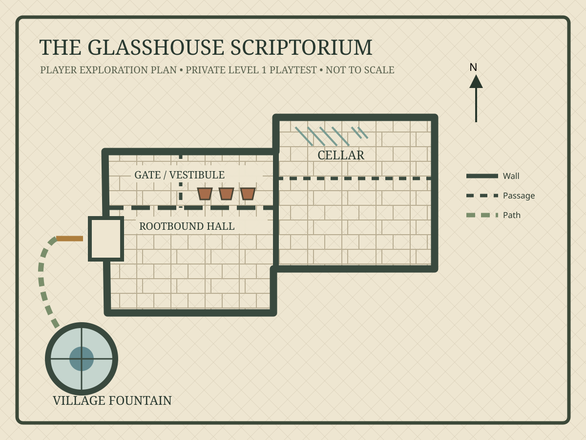

QUESTFORGE · PLAYER MAP · PRIVATE PLAYTEST
The Glasshouse
Scriptorium
Find your bearings before you cross the threshold. This is a schematic exploration plan, not a map to scale.

Read full-size map detail
Swipe or scroll inside the map to explore. With a keyboard, focus the map area and use the arrow keys. The room and legend key below provides a text alternative.
Rooms at a glance
- Gate / vestibule
- The upper-left room on the plan, with three ceramic soil pots.
- Rootbound Hall
- The room below the gate / vestibule, on the left.
- Cellar
- The large room on the right, with broken roof panels shown above.
- Village fountain
- The circular feature outside the building, at the lower left.
Map line legend
- Wall
- A solid dark line.
- Passage
- A dark dashed line.
- Path
- A green dashed line outside the building.